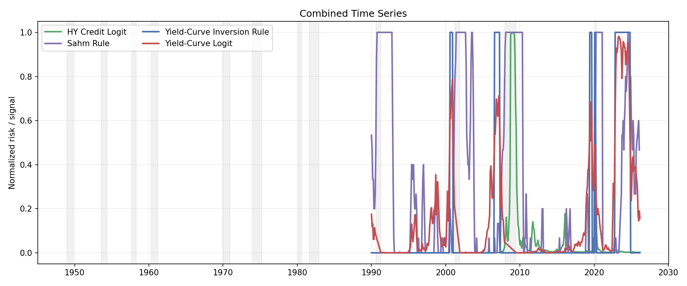
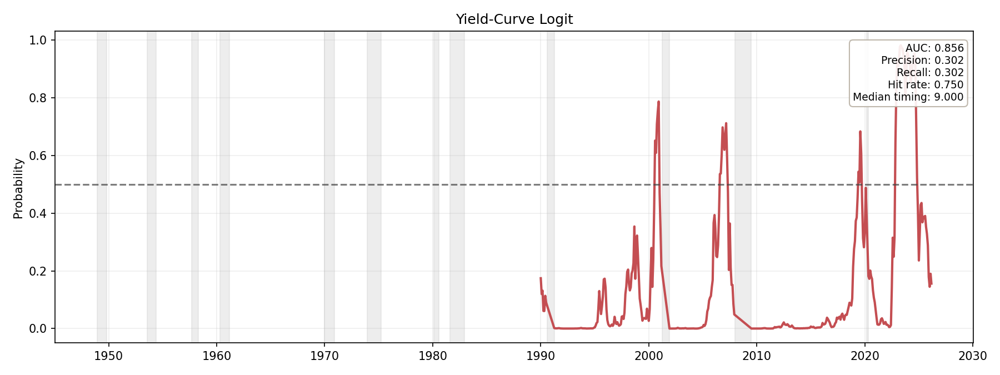
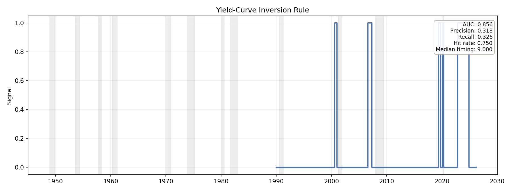
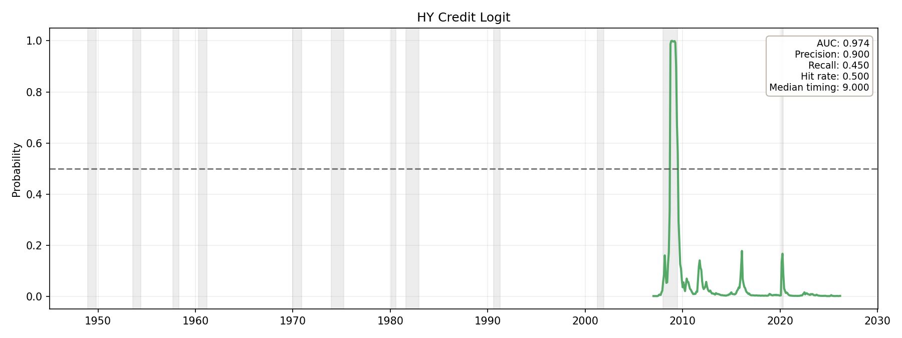
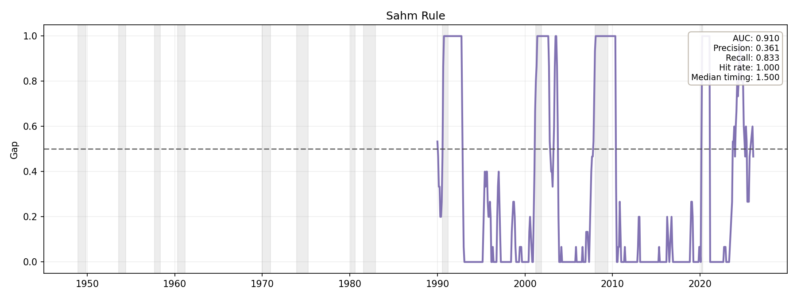

| Model | Latest date | Latest score | Latest signal | AUC | Precision | Recall | Event hit rate | Median timing (months) |
|---|---|---|---|---|---|---|---|---|
| Yield-Curve Logit | 2026-03-01 | 0.1560 | False | 0.8561 | 0.3023 | 0.3023 | 0.75 | 9.0 |
| Yield-Curve Inversion Rule | 2026-03-01 | -0.6153 | False | 0.8561 | 0.3182 | 0.3256 | 0.75 | 9.0 |
| HY Credit Logit | 2026-03-01 | 0.0026 | False | 0.9743 | 0.9000 | 0.4500 | 0.50 | 9.0 |
| Sahm Rule | 2026-02-01 | 0.2333 | False | 0.9102 | 0.3614 | 0.8333 | 1.00 | 1.5 |
| model_name | target_name | horizon | split_name | test_start | auc | precision | recall | f1 | false_positive_months | brier_score | ece | event_hit_rate | median_timing_months | event_hits | n_events |
|---|---|---|---|---|---|---|---|---|---|---|---|---|---|---|---|
| yield_curve_logit | within_12m | 12 | fixed_1990_holdout | 1990-01-01 | 0.8561 | 0.3023 | 0.3023 | 0.3023 | 30 | 0.1128 | 0.0696 | 0.75 | 9.0 | 3 | 4 |
| yield_curve_inversion | within_12m | 12 | fixed_1990_holdout | 1990-01-01 | 0.8561 | 0.3182 | 0.3256 | 0.3218 | 30 | NaN | NaN | 0.75 | 9.0 | 3 | 4 |
| hy_credit_logit | current_recession | 0 | fixed_2007_holdout | 2007-01-01 | 0.9743 | 0.9000 | 0.4500 | 0.6000 | 1 | 0.0396 | 0.0324 | 0.50 | 9.0 | 1 | 2 |
| sahm_rule | current_recession | 0 | post_1990_monitoring | 1990-01-01 | 0.9102 | 0.3614 | 0.8333 | 0.5042 | 53 | NaN | NaN | 1.00 | 1.5 | 4 | 4 |





Recession periods are shaded in gray on all charts.